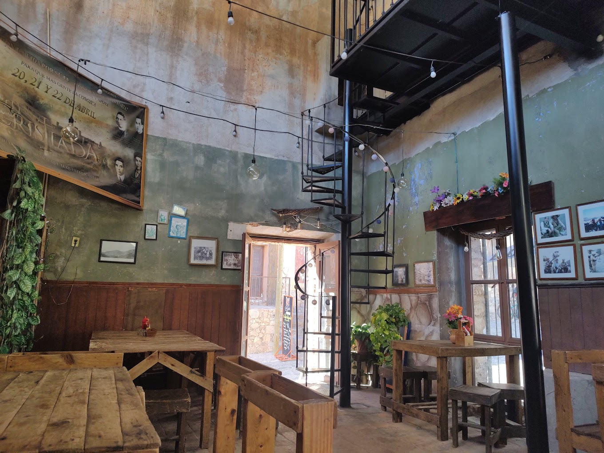

| MENÚ | TIENDA | PLATOS | CARRITO |
Nuestra ubicación:Pl. Juárez, 78440 Cerro de San Pedro, S.L.P. El Charape: Sabor, Tradición y Vista al Cerro de San Pedro
En el corazón de la histórica y pintoresca localidad de Cerro de San Pedro, en San Luis Potosí, un pequeño local de comida comenzó su andadura en 2015 con una promesa: llevar los sabores tradicionales de la región a los paladares más exigentes, manteniendo vivas las costumbres y recetas ancestrales de la zona. Ese local, que hoy se ha convertido en un referente para locales y visitantes, se llama El Charape. |
Establecimiento:La historia de El Charape no es solo la de un restaurante, sino la de una comunidad que se ha reunido alrededor de la buena comida, el buen trato y el respeto por las tradiciones. Gracias a Javier y a su equipo, el sabor de Cerro de San Pedro continúa viviendo en cada plato que sale de su cocina, y El Charape sigue siendo un lugar donde todos son bienvenidos a compartir una comida, una historia y una sonrisa. |
 |
Cerro de San Pedro:El Cerro de San Pedro, ubicado cerca de la capital de San Luis Potosí, es un destino fascinante lleno de historia y encanto. Aquí puedes explorar la Mina de la Cárcel y aprender sobre la historia minera, capturar fotografías de las ruinas y figuras de mineros, visitar iglesias históricas como la Iglesia de San Nicolás de Tolentino, disfrutar de artesanías, y probar las deliciosa gastronomia en el restaurante El Charape, un lugar ideal para ir con familia y amigos. Además, en marzo se celebra el Festival del Cerro de San Pedro con actividades culturales y rutas ciclistas. ¡Ven y descubre este lugar mágico lleno de historia y belleza! |